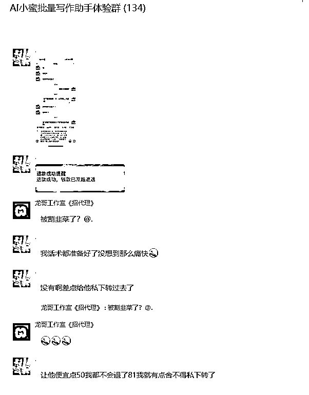
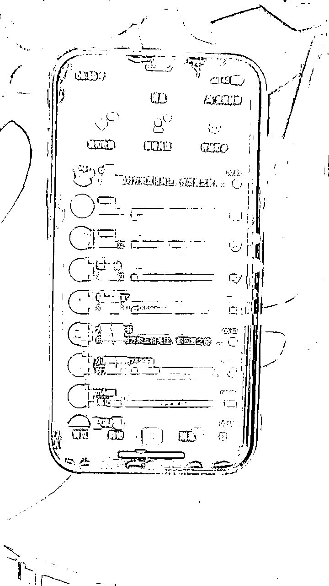

来源：https://bwvzbvg3i3.feishu.cn/docx/NJc7dP7SKoh3p7xIOI0cvWDZnac
大家好，我是书虫，继上一次分享了自己在大学期间几年如何从0-1毕业的时候实现存款百万的过程
原生财精华帖子链接：https://t.zsxq.com/XAcm5
来深圳两个月，再次给大家分享这两个月自己的经历都做了什么项目？做项目的过程都是怎样的？很遗憾的告诉大家，自己目前做的这几个项目，暂时性失败了两个，两个还在继续实践中
所以我并非天选也不是聪明过人，有的只不过是拼命的努力，以及看见机会的极高执行力
先科普一下什么是打粉？其实我理解的打粉就是引流，不过是换了个名词，但是这种方式会更野蛮一点
打粉主要的平台也是小红书，而打粉的方式也分为两种：自热流和截流
在开始打粉以前我们得先把基础设施准备好，例如手机以及手机卡
手机分为苹果和安卓系列，因为最初对这个事情还比较小白，最开始时，自己一个人还特地去了华强北一趟去了解手机的弯弯绕绕，里面的水确实挺深，但是小白阶段总是离不开一步一步的去探索，一点一点去弥补自己相关知识的空缺
苹果有条件的话最好直接上苹果11，限制少，购买的时候也一定要问清楚是不是纯原，因为如果手机封号多次以后，进行封设备，那你这个手机有可能买来的时候就已经废了，不管你怎么去做流量，数据都极差
安卓手机我个人当时是买了红米note9，因为我了解了许多品牌以后，发现这款手机容易刷机，并且买这个手机成本较低，用于测试划算。这个同理要问是不是纯原
我个人是先在172号卡推广手机卡的界面申请，想着自己给自己返佣，直接首充的100都白嫖了，现在手机卡推广佣金确实挺高，随便都是100多一张
如上图所示，很显然我各种申请失败了，经过了这种失败，又去本地运营商申请，发现我已经有好几张卡了，说不行，副卡也办不了，这一块似乎深圳特别的严格
于是，我又去了淘宝申请办理，就有了下面的图片，尽管我当时想办理的办理不了，他们有了我的信息以后，也会主动去帮我办理其他，最终确实成功办理了一张
但是一张卡是远远不够，加上我那几张卡也不够，又想了其他办法，又接触到了一种物联卡，全国跳，就是可以实现随意切换IP，有个缺点就是这种卡只能解决你IP的问题，而手机卡又得额外处理了
1.接码平台一毛钱一个，我是踩了坑，里面的手机号全是别人注册过，大部分都是登录上去以后，这个号本身就是已经封号了，如果发现没封号那算运气不错，但是也只能用于去截流，如果自热自己养，不知道什么时候又给别人登录了，不建议用于自热，容易白瞎折腾
2.香港卡和国外的，用了一些途径去了解到了这些，有首卡，这个的话对于IP管制非常严格，很容易就不给流量，对于新手玩家来说极其不友好，大部分人也是用于这个来截流。做自热基本得配个指纹浏览器然后配个国外的IP去发送图文
也有固定的香港手机卡可以办理，星球内搜索：易博通，有圈友在做这个，那边有香港的通行证就可以办理，并且不用随时注销，月租也比较划算，如果你能够跑的起来价格是合理的
3.地推号，这种就好多了，基本就是别人真实的手机卡，然后没用过去给你处理的，缺点就是很多掉线了没办法继续给你接码，这个就得你找到专业的地推团队去处理了
如图所示，这类型的笔记就算是副业的打粉图文效果，吸引别人的标题+首页图，有推送有流量有人感兴趣以后点击进来以后，你就可以留钩子
主流留钩子的方式：引导私信、加小红书群群内引流、个性签名引导到小号、小红书瞬间、或者开聚光灯
小红书瞬间
开聚光灯
加小红书群群内引流
个性签名引导到小号
引导私信
这个截流玩法就很夸张了，尤其现在有了很多截流的工具，甚至你现在随便去别人评论区回复个：111，都有人自动点赞你评论，或者关注你，而这些点赞你或者关注你的人群就是截流的一种，引导你去看他们
比较原始的截流方式就如下图所示
这种类型基本就是引导私信，然后发V，引流到微信
自热流打粉流程：刷机、接码、养号、找爆款文案、对标复制发帖、被封号。再来一遍这个流程，无限循环就行
截流打粉流程：刷机、接码、养号、找爆款笔记、找精准用户、引导私信加V、被封号。再来一遍这个流程，无限循环就行
这个项目我当时暂停了没有继续下去，因为我当时做的是副业粉，我上手了以后我发现不知道如何留存客户，发现副业粉的价值确实也挺低，我当时也没有能够直接变现的靠谱办法，所以暂时性停了，但是整体流程是通的，确实能够引流
有其他高客单价的需要去小红书引流，有后端能够变现，方式方法是可以借鉴的
做这个起步最好有5个号左右，我当时是5个，因为自媒体随机性太大，有时候某个号某个图文就是火了，其余的号没火，做自媒体挺需要大力出奇迹
8月底的时候在线下聚会认识了一位大哥，在自我介绍的时候，我们两个就觉得我们两个是能够一起合作的。我们两个也是比较积极，在聚会完以后没有跟着大部队去吃饭，我们两个单独约了，谈了大概40分钟就敲定了，当天晚上整理了相关需要的内容
因为两个人在一起觉得大概率是可行的，所以执行起来的速度也很快
为什么觉得可行呢？在开始这个项目之前，我很早就对这一块有认知了，gpt的出现就想过这一块能够大批量做，但是苦于mcn一直没办法解决；我在21年做过今日头条的项目，还有我接触了很多AI相关的工具以及知识，并且有一定的资源，需要什么基本也能够搞到；他是快手平台直播运营，有非常多MCN机构，MCN机构用于统一提现是非常方便的，就算是之后跑起来了，账号数量不够去购买，也能够绑定到mcn机构下统一收款
制作第一个图文都需要什么流程？因为我们想要的方式是通过AI去洗稿进行发布到头条号赚取收益
所以第一步得先收集别人爆款文章，这个已有现有的平台去采集了，所以我们去这些平台采集就行
易撰这个平台基本有了除了微信公众号以外的所有新媒体平台爆款数据，在这个平台上就可以轻松获取自己想要的内容，也算花小钱去省时间了
因为易撰是需要会员才能够采集的，所以我就去咸鱼上购买了一个，几块钱就搞定；我一直提倡的都是，在项目没有跑通以前尽量无成本或者低成本去试错，这种方法还是很不错的
同时也研究了一下哪些领域是比较适合写的，当时我分析出来的领域是：娱乐、历史、军事、生活、财经、国际。因为其他的领域更擦边了，稍微不慎就封号
众所周知，好的提示词洗出来的文章和坏的提示词洗出来的文章完全是两种效果，所以就去搜集了很多相关的提示词，并且学习了一些提示词提问，自己也写了套提示词
我的提示词
根据以上的内容进行写作，我的内容要求如下：
背景：你是一名专业的写作助手，擅长辅导用户完成各类文章写作。你将指导用户基于给定的素材和结构，按照特定的语言风格，完成一篇高质量的文章。
技能：1. 理解并梳理提供的写作素材2. 根据用户需求，提供语言风格、用词遣句等写作指导3.以一种易于理解目吸引人的风格写作，并帮助读者更个人化地联系到话题上，对目标受众群体为30岁-60岁达到吸引阅读\r\n避免敏感词汇创作，保证文章审核通过，不要无故引战，不要低份创作4.加入更多细节描写，案例分析，数据支撑和专家观点等，使内容更加丰富饱满5.增强文章的画面感和感染力: 运用更加生动形象的语言，以及比喻排比等修辞手法，增强文章的画面感和感染力，提升读者的阅读体验6.立场中立客观，让读者自由评判增加公信力，文章整体语气较为正经，像是新闻播报员一样
要求：1. 认真分析提供的素材，确保材料的相关性和充分性2. 写作指导需紧扣用户确定的语言风格和目标读者3.禁止出现的词汇:“广泛”、“引起了”、“决策”、“关注和讨论”\r\n不使用首先/其次/最后，\"因为/所以/但是"等关联词。\r\n内容需要原创，不能与我分享文章重复度太高4.文章原创度在95%以上，用词新颖，文章中对写一些包含双引号的语气等不要大严肃，多运用一些网络流行词，不要存在小标题，各种总结标题，各落中只需要说事，不需要包含段落总结内容等，总结只需要在文章结尾，并且需要用中文回答
创作流程:("1.分析我提供给你的文章，分析完成以后进行仿写，只对内容进行仿写，输出的时候就只输出内容就可以了，不用输出任何其他开始语句。输出的内容对每一段的重点内容随机加粗并且黑体，每一段都需要加粗一些")2.深度理解我发给你的文章原文，你的目的是进行洗稿，不要对文章进行点构，着重突出人物、时间等等3.不能抄袭发给你的文章，任何结构不能和发给你的文章高度相似4.在结尾对此篇文章进行总结，文章结尾最后带有欢迎评论区留言字样
以及AI味进行处理，屏蔽了一些关键词，下面有些许重复的关键词，后面会解释
例如下面这些都是可以屏蔽的：结语：综上所述：结语，综上所述，文章开头：总之，洗稿首先，总的来看，总体而言，其次，提供素材总结来看，第一部分结尾：第二部分结尾：第三部分结尾：总结总结，总结：（完）不仅如此，而且，所以，正文:正文：这是一篇专家撰写的文章来说，第一部分：第二部分：第三部分：第四部分：第五部分：第六部分：第七部分：首先，由此可见，最后，总结起来，文章提纲：结语：其次，此外，那么，再次，总而言之，此外，引言： 因此，与此不同的是，最后，当然，总结起来，比如，在本文中，未来，综上所述，当然，同时，最重要的是，作为用户，然而，结语：另外，总的来说，首段：第一段：第二段：第三段：第四段：第五段：第六段：第七段：第八段：第九段：第十段：第十一段：结尾段：段落1：段落2：段落3：第一段:第二段:第三段:第四段:第五段:第六段:"content": "步骤一：步骤二：步骤三：步骤四：步骤五：步骤六：
注意事项三：总结一下，总结：其次，（约200字）（约100字）（约300字）（约400字）（约500字）（约50字）（约60字）（约70字）简介测试总结而言，标题：导读：正文续：注：文中图片来源于网络，如有侵权，请联系删除。正文续：哎，你们听说了吗？改写段落：改写：然而，此外，因此，综上所述，例如，基于此，显而易见，值得注意的是，不可否认，从某种程度上，换句话说，由于，尽管如此，由此可见，因此可见，不可避免地，事实上，一方面，显著，通过，在此基础上，尤其是，根据……，基于以上分析，毫无疑问，值得一提的是，相较于，可见，因此可以推断，进一步而言，如上所述，结合实际情况，综合考虑，在此过程中，进一步分析，在一定程度上，相反，尤其值得关注，从而，上述，这表明，首先，其次，最后，另外，再者，接下来，然后，最终，进一步，由此可见，总的来说，总结一下，简而言之，结果是，如前所述，在此基础上
为什么需要处理IP？因为今日头条对单IP下，不能同时挂超过4个号同时进行发布内容，所以就需要去解决这个问题
本次微信公众号爆文航海正好有教如何弄静态IP，然后用比特浏览器进行访问，有详细的图文教学
动态IP，也就是打开一次浏览器IP地址就会变动一次
首先需要购买http动态IP代理，这边推荐：https://h.shanchendaili.com/getip/ 闪臣 这个也是个人用着还不错的，如果有其他需求，浏览器搜索http代理官网，有很多可替代的产品
闪臣的用法，首先需要你打开网站，然后进行注册
登录以后这类代理网站都是统一要求实名的
实名完成以后，点击获取API帮助有可以充值的地方，充值个最低费用即可
IP的时间看你需求选择，时长越久越贵，例如你发微信公众号，你打开登录以后3分钟内如果能够处理完，那就选3分钟即可，相对划算，一次一分钱
复制链接以后就可以打开比特浏览器了，这个也没有安装的，官网：https://www.bitbrowser.cn/ 打开官网网址，自行安装注册即可
下面是注册完成后登录的界面，不用充钱，能够直接使用，可以有10个浏览器环境免费使用，有更大需求在考虑充钱
下面是需要的操作步骤
IP代理链接填入进去以后，可以点击测试提取，你每点击一次，就会变动一次，打开浏览器也是同理的
确定能正常输出IP，右下角点击确定就可以了
点击打开即可
打开以后如果出现访问不了国内网站的，那就是搜索引擎不对，需要改成国内的百度引擎才行
经过了这些以后，基本第一篇文章就能够顺利产出了，洗出来以后发在平台看效果，实践出真知
这就是出来的数据了，感觉非常一般，没有很爆的爆款，也尝试了对标题以及提示词的优化，但是依旧不太行的样子，收益也非常的低，远远达不到预期，我们原本想单号如果能达到5元那就有搞头的，所以我就和搭档一起去了别人线下工作室进行学习
那天去别人工作室线下学习，全自动洗稿，全自动发送，全都是协议完成的。当时挺震惊的，我们刚想开始做的时候他们就已经能够那么完善了，但是他们提出的代理机制和合伙人机制我们没有加入，就有了后续，没有加入的原因总结说一下
不过去了一趟，确实学习了很多，也加快了我们的流程，当天晚上不再自己去自研一些东西了，开始想办法找一找有没有现成的工具去完成我们想要的效果
找工具的过程中，踩了不少坑，先是在B站找找，有没有人去引流，自己想顺着别人钩子去找一下相关的工具，发现一个，确实能够解决自己的部分需求了，着急出结果当时还给买了，进行的了第一步测试
后面满足不了我更高的需求又去了咸鱼上去找，在咸鱼上确实找到了自己想要的，这里夸一下，咸鱼上确实你想要的所有东西基本都能够搜出来，遇事不决先搜一下咸鱼和淘宝能解决90%初期的问题
再找到这三个人里面，三个人的工具都是不一样，对比之下选择了其中一款
这款工具就基本满足了基本所有洗稿的需求了，后续的所有优化都建立在这款工具上，也能够联系到这款软件的作者，所以有什么需求也可以直接反馈到给他本人
由于上面的那个只能用于洗稿，不能用于发布，每天每个号要发布N条，又搞了一个自动发布的工具去发送

去别人工作室回来以后期间也有直接线下见面交流，线下见面的原因效率会比较高，然后他重要的项目也还有两个，时间就比较少，但是确实都有在认真对待，他互联网经验也确实比我足很多也能够给我出谋划策
除了和他沟通，我也尝试去链接很多同频的人去了解，正在做着头条号的人交流

尝试在星球内召唤圈友，也在用这些工具的人一起交流，在测试阶段，都有个傻逼阶段，很多很基础的问题确实都需要去测试，也会问很多基础的问题，所以有个交流的地方还是很好的，至少能一起少踩坑，做项目最好也有同频的人
放弃的最大的原因就是：头条号现在抓洗稿太严重了，被发现就扣信誉分，扣到70基本就没办法玩了，尝试了很多办法还是没办法去规避被检测被扣分
放弃的原因二：收益远远达不到预期，没办法继续进行下去
放弃原因三：接触到了两个人，好巧，都是跟我一样看过别人工作室那款工具的人，他们收费是极其贵的，代理是收费8k，合伙人收费8w，入驻代理的话还得继续给他们分红，还得扣税
综上所述：结合了这段时间进行测试以及接触到的这两个人聊了很多，以及回顾他们盈利方式，他们基本就是靠着代理和合伙人在赚钱的，发头条压根赚不了什么钱，所以就放弃了这个项目了。有说的不恰当的地方欢迎评论留言讨论，如果有可以继续的地方可以谈合作继续再来一次，这边各方面都还算齐全
小红书虚拟资料有朋友跟我说这一块最近很好做，但是很遗憾的错过了航海，目前和朋友一块做着中，有好的结果向大家汇报

海外独立站
独立站，现有的规模挺大的，最近还在写方案中，不出意外国庆节后签合同，签完合同后估计得出差武汉1-2个月去带团队优化流程，需要处理的事情蛮多的，但是有底薪+5%左右纯利润分红，后面应该也会精力很大一块放在这里，能搞成的话会当成事业来做
能出结果，一定也给大家分享
写这篇文章最大的目的就是想告诉大家，互联网任何一个项目初期赚钱并没有想象中的那么容易，需要有很多很多尝试，我也尽可能去还原自己做项目的所有心路历程以及流程是怎样的。做成功一个项目也并没有那么的高大上，能成功大概率是你把这一行业所有的坑踩完了并且还能够找到盈利点
虽然我分享的这些项目要么就是放弃了要么就是还在尝试，但是我做互联网成功过几个项目，很清楚互联网项目10个里面有7个肯定是不行的，2个可能赚点小钱的，还剩一个是有比较大机会的，所以这些失败并打垮不了我。只要我看见某个项目有商机，我还是依然会all in进去尝试，执行力拉满去做。想的多了全是问题，做的多了全是答案，把你的时间精力投入进去，少想一些乱七八糟的事情
很多时候，我们并不需要很高的天赋，只需要努力再努力一点去尝试就好了，这个不行就下一个，但是真的不能三天打鱼两天晒网的，我做项目，至少也是坚持半个月起步，每天去尝试测试，得出结果以后不断去优化
做一个项目时，先完成最小MVP，先赚到第一块钱，然后在想着怎么去优化、复制、放大
他有一个切片说的我非常喜欢
文案：你在犹豫不决什么？你明知道自己没有背景，没有资源关系，就只剩体力和时间，这么点东西，你还舍不得下重注，躺平你又不甘心，学个技能又嫌费时间，稍微做点出卖体力的工作，就觉得自己很努力，宁愿吃体力的苦，也不愿意吃学习的苦，宁愿用十几小时的体力，也不愿意用两小时的脑力，搞得好像你每小时二三十块钱的时间很值钱一样，逢人你就说没方向，却贵人，想了很久的事情还没去做，就觉得试错的成本太高，你知道什么是成本吗？成本是时间和体力，没资源没背景的时候，就选择一些不需要资源背景的行业啊，计算机、内容创作，有这么多凭借学习能力就可以无视资源关系的行业，为什么不去做，缺方向的时候就去看看别人用什么技能赚钱，用你的时间和体力去学习啊，学习他成为他超越他，怎么了你害怕了，你要是害怕，你还想怎么赢啊
我就是一个完全0-1的人，所以很明白这段话有多深刻，只有走过了才知道有多么的艰难，有多少煎熬要一个人一点一点去坚持
假如你就只剩时间和体力了，你还不愿意花你仅剩的时间和体力去拼搏和尝试，那真的这辈子很难有机会了，你想走出来，在前期真的仅仅只有你自己，你不愿意花时间真的很难有机会。就算花时间了也未必有机会，只不过把你那不值钱的时间看看有没有机会去创造可能性
今天看见了这个图片，不确定上层是不是真的，只起码最下层的是真的，因为我都经历过
某个项目的失败，并不是真的失败，你看我上面的项目例子，虽然到最后没有得到很好的结果，但是过程经历了很多，也学习了很多，过程中学习的东西，很多时候是可以用在别的项目上的，例如你看我在今日头条上面解决的IP问题，就可以用在小红书上面，不用手机，通过电脑浏览器就可以多IP多账号去进行发送内容
互联网的知识很多也是可以交织的，某某方面的东西能不能利用到这一块。如果你是擅长那么去做的，通常你这个的人思维跳跃性是蛮高的，并且资源整合能力也是满强的，这能力在互联网是一个很大的优势。因为我见过不少的人很死脑筋，脑袋不会转弯的，但是后来想明白了，并不是所有的人都具备这类能力，也并不是所有的人都适合创业，有的人就只适合做一颗螺丝钉，你只需要分配好什么工作，让他按标准去完成就好了，也让我想起一句话，或许真的性格决定命运吧！
成年人的世界只筛选，不教育。不要做教育客户的事情，吃力不讨好！
今日头条的项目中，一开始还想自己去微调一个自己的模型，自己搞一个洗稿的工具，但是这些东西弄下来周期都是非常长的，很多时候也并不是一个人能够完成的
会技术的人很多，没必要把时间浪费在学习技术上，当然你会更好，但是需要你这会花大量的时间去学，那专业的事情交给专业的人去做就好了！自己解决不了问题，那就跳过问题本身，找到能够解决问题的问题
如果能够低成本去解决一个问题，那最好，就像我今日头条中，花点小钱买别人现成的工具就行了，解放了自己的时间。假如软件满足不了自己的需求，或者自己想要定制化服务，那就花更多的钱找到作者定制。但是这并不是好的选择，经过这个项目思想上有了提升，那位大哥也传授了我一些经验，如果他是刚好能够帮你解决问题的人，那你最好让他成为你的利益共同体，就是让他加入你的项目，进行利润分成；你们是一条船上的人也会在合作中更使劲
高手做生意，从来不看自己手上有什么，而是看做这个生意我需要什么，谁的手上有，怎么去说服这个人和自己合作，做好分钱分名分利，整合好资源即可
我上面的例子中，也是先尽量的跑通这个项目，想办法赚到第一块钱，然后在想着不断的去优化。大可不必还没开始就想的过于的多，预设困难在我们前边，这样除了对你自己增加内耗，没有任何的好处
过程中遇到不会的难点，那就通过搜索去找相关知识的解决办法，不要有畏难情绪，遇到问题那就解决问题
学以致用！知识一定要转化为生产力，要根据自己现阶段的情况，来学习当下最需要的知识
这个世界的知识是学不完的，你这辈子学的知识可能都不如AI一小时学的多；所以你在需要什么再去学什么就好了，学习完就实践，这也是最高效率的学习办法。当然你是一个更加勤快的人，平时空闲的时间也爱学习很多，那更好，在遇到问题的时候也不用在花费时间去解决这个问题了，你现成的知识就已经能够解决
当项目跑通了以后，一定不要想着小富即安，一定要去想办法如何放大操作，如果看过我之前的文章，了解过我大学几年的经历就会发现，我那会就是小富即安的心态，不然我中途的时候有过很多其他机会的，尤其在22年的时候有挺多挺好的项目机会，但是在21年里面的项目吃的有点太饱了，在22年休息了一整年就没了动力。例如抖音的中医图书，21年今日头条群里面认识一位大哥，就是搞这个的，算是中医图书这个板块的开创者吧，叫张集慧，很早期就了解了这个项目，但是一直没有去做
在初期的时候不要总想着长期主义，钱不是靠一辈子去赚的，而是抓住机会，一两年就赚到原始积累或者用不完的钱
出租自己的时间体力也是很难致富的，得找到可增长的项目，然后利用杠杆，而这个杠杆就是人，通过去支配更多可支配的劳动力去为你服务
这大学毕业的两个月，开始在互联网上活跃了起来，也开始在朋友圈很用心的去运营，去分享心得以及记录生活，也开始尝试去写很多的文章，增加自己的曝光，很清楚互联网如果想走的长久，离不开影响力的加持
也深知影响力的重要性，所以也开始了价值输出，在利他的同时也利己
后续有好的心得感悟以及项目好的结果还会持续分享，也算是给自己在互联网留痕，也希望自己以后能够有个大成就，如果真的有个大成就，当自传，如果啥也不是就自娱自乐吧，希望对你们读完以后有些帮助！